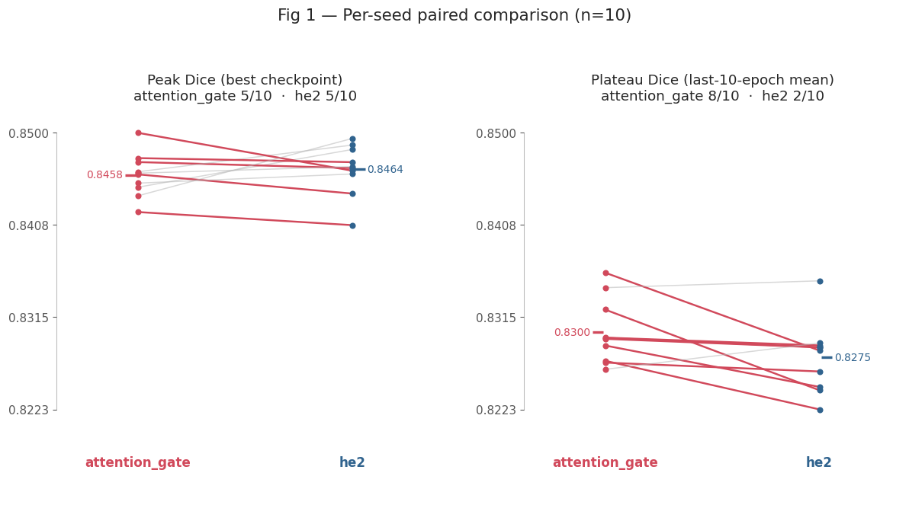
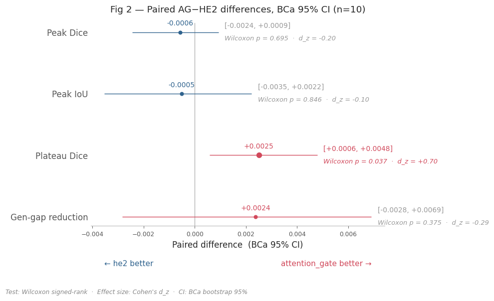

E2 — ISIC 2017 UNet2D Architecture Tie-Break (10 seeds)¶
Question. Between classical + he2 (HE2) and classical + attention_gate (AG) (both at lr = 3e-4), which architecture produces the better segmentation model?
Design. 10 shared seeds (100–109). Within each seed both architectures share weight initialisation and data ordering, so the only difference inside a seed pair is the architecture. We therefore analyse the paired differences Δᵢ = AGᵢ − HE2ᵢ using ISIC 2017 validation set
Source. E2-isic2017-unet2d-model-tiebreak-5seed.db (seeds 100–104) + …_part2.db (seeds 105–109) — 20 runs (2 architectures × 10 seeds), all FINISHED.
Executive summary¶
Paired across 10 shared seeds, Δ = AG − HE2
Primary test = Wilcoxon signed-rank
CI = BCa bootstrap 95 % (10 000 resamples,
rng=42)d_z = Cohen’s paired effect size.
Metric |
AG |
HE2 |
Δ (AG−HE2) |
95 % BCa CI |
Wilcoxon p |
d_z |
Verdict |
|---|---|---|---|---|---|---|---|
Plateau Dice — primary, pre-registered [1] |
0.8300 |
0.8275 |
+0.0025 |
[+0.0006, +0.0048] |
0.037 |
+0.70 |
AG ✓ |
Peak Dice |
0.8458 |
0.8464 |
−0.0006 |
[−0.0024, +0.0009] |
0.70 |
−0.20 |
tie |
Peak IoU |
0.7392 |
0.7397 |
−0.0005 |
[−0.0035, +0.0022] |
0.85 |
−0.10 |
tie |
Generalisation gap (lower = better) |
0.0921 |
0.0945 |
−0.0024 |
[−0.0068, +0.0030] |
0.38 |
−0.29 |
tie |
Throughput [2] |
119.7 sps |
135.3 sps |
−15.6 (−13 %) |
[−17.3, −12.7] |
0.002 |
−4.1 |
HE2 ✓ |
[1] Plateau Dice is the primary metrics; tested standalone (k = 1, α = 0.05).
Secondary quality metrics: Peak Dice, Peak IoU and Gen-gap form a Holm family (k = 3) — none of the paired differences are significant.
[2] Training-cost hypothesis; standalone (k = 1, α = 0.05).
Finding.
AG wins on the pre-registered primary metric (plateau Dice: p = 0.037, CI excludes 0, d_z = +0.70, 8 out of 10 seeds)
Peak Dice and IoU are statistical ties (|Δ| < 0.001, p > 0.7)
HE2 trains 13 % faster (p=0.002)
Decision: lock ``classical + attention_gate`` at ``lr = 3e-4``.
[1]:
# ── Path bootstrap (must run before any SkiNet import) ───────────────────────
import sys
from pathlib import Path
# Resolve the repo root regardless of kernel working directory.
# VS Code injects __vsc_ipynb_file__; nbconvert sets CWD = notebook directory.
try:
_nb_dir = Path(__vsc_ipynb_file__).resolve().parent # VS Code interactive
except NameError:
_nb_dir = Path().resolve() # nbconvert / CLI
PROJECT_ROOT = _nb_dir.parents[1].resolve()
sys.path.insert(0, str(PROJECT_ROOT))
# ── Imports ───────────────────────────────────────────────────────────────────
import numpy as np
import pandas as pd
from SkiNet.Utils.analysis.aggregation import load_runs
from SkiNet.Utils.analysis.stats import build_comparison_table
from SkiNet.Utils.analysis.reporting import show_run_table, show_comparison_table, show_family_verdicts
from SkiNet.Utils.analysis.plotting import set_paper_style, plot_paired_slopegraph, plot_paired_forest
from SkiNet.Utils.analysis.schema import VAL_DICE_MAX, VAL_DICE_TAIL_MEAN, VAL_IOU_MAX, GENERALIZATION_GAP_FINAL, SAMPLES_PER_SEC
# ── Configuration — every tunable argument lives in this cell ────────────────
FIG_DIR = _nb_dir / '_static/model_selection'
DB_PATHS = [
PROJECT_ROOT / 'mlruns' / 'E2-isic2017-unet2d-model-tiebreak-5seed.db', # seeds 100–104
PROJECT_ROOT / 'mlruns' / 'E2-isic2017-unet2d-model-tiebreak-5seed_part2.db', # seeds 105–109
]
AG, HE2 = 'classical+attention_gate', 'classical+he2'
EXPERIMENT_MAP = {1: HE2, 2: AG} # MLflow experiment_id - architecture
PALETTE = {AG: '#d1495b', HE2: '#30638e'} # color palette for the two architectures
ALPHA = 0.05 # significance level for confidence intervals and hypothesis tests
N_BOOT = 10_000 # bootstrap samples for confidence intervals and p-values
RNG = np.random.default_rng(42) # random number generator for reproducibility
# Metric column names are imported from SkiNet.Utils.analysis.schema; the
# spec lists below stay here because the choice of metrics, family sizes and
# display names is specific to this E2 paired comparison.
PRIMARY_METRIC = VAL_DICE_TAIL_MEAN
SECONDARY_METRICS = [VAL_DICE_MAX, VAL_IOU_MAX, GENERALIZATION_GAP_FINAL]
# (metric, higher_is_better, family_size_k)
METRICS_SPEC = [
(VAL_DICE_MAX, True, len(SECONDARY_METRICS)),
(VAL_IOU_MAX, True, len(SECONDARY_METRICS)),
(VAL_DICE_TAIL_MEAN, True, 1),
(GENERALIZATION_GAP_FINAL, False, len(SECONDARY_METRICS)),
(SAMPLES_PER_SEC, True, 1),
]
SLOPE_METRICS = [
(VAL_DICE_MAX, 'Peak Dice (best checkpoint)'),
(VAL_DICE_TAIL_MEAN, 'Plateau Dice (last-10-epoch mean)'),
]
# (display_name, metric, higher_is_better)
FOREST_SPECS = [
('Peak Dice', VAL_DICE_MAX, False),
('Peak IoU', VAL_IOU_MAX, False),
('Plateau Dice', VAL_DICE_TAIL_MEAN, False),
('Gen-gap reduction', GENERALIZATION_GAP_FINAL, True),
]
# ── Presentation ─────────────────────────────────────────────────────────────
set_paper_style(context='notebook')
pd.set_option('display.width', 220)
pd.set_option('display.float_format', '{:.4f}'.format)
[2]:
# ── Load: 20 runs = 2 architectures × 10 seeds ───────────────────────────────
runs = load_runs(*DB_PATHS, exp_map=EXPERIMENT_MAP, monitor="val_dice")
SEEDS, N = sorted(runs['seed'].unique()), runs['seed'].nunique()
Loaded 20 runs: {'classical+he2': 10, 'classical+attention_gate': 10} | seeds: [100, 101, 102, 103, 104, 105, 106, 107, 108, 109]
1. Data¶
One row per (seed, architecture). Columns:
``val_dice_max`` — peak Dice of the best-saved checkpoint (the model that would actually be deployed).
``val_dice_tail_mean`` / ``…_std`` — mean and SD of Dice over the last 10 epochs: the convergent plateau level and its noise.
``val_iou_max`` — peak IoU of the best checkpoint.
``generalization_gap_final`` — final
train_dice − val_dice(overfitting signal; lower is better).``samples_per_sec`` / ``duration_min`` — training throughput and wall-clock cost.
[3]:
show_run_table(runs)
| arch | seed | val_dice_max | val_dice_tail_mean | val_dice_tail_std | val_iou_max | generalization_gap_final | samples_per_sec | duration_min | |
|---|---|---|---|---|---|---|---|---|---|
| 0 | classical+attention_gate | 100 | 0.8446 | 0.8323 | 0.0091 | 0.7375 | 0.0836 | 120.6179 | 47.9777 |
| 1 | classical+attention_gate | 101 | 0.8421 | 0.8270 | 0.0075 | 0.7350 | 0.0895 | 120.2251 | 44.7637 |
| 2 | classical+attention_gate | 102 | 0.8459 | 0.8295 | 0.0141 | 0.7402 | 0.0932 | 119.1804 | 44.9632 |
| 3 | classical+attention_gate | 103 | 0.8471 | 0.8360 | 0.0088 | 0.7416 | 0.0926 | 121.8578 | 45.0704 |
| 4 | classical+attention_gate | 104 | 0.8461 | 0.8294 | 0.0098 | 0.7385 | 0.1012 | 122.7619 | 44.9806 |
| 5 | classical+attention_gate | 105 | 0.8500 | 0.8287 | 0.0164 | 0.7446 | 0.0725 | 116.9509 | 46.6895 |
| 6 | classical+attention_gate | 106 | 0.8475 | 0.8295 | 0.0080 | 0.7417 | 0.0979 | 119.1532 | 45.3808 |
| 7 | classical+attention_gate | 107 | 0.8460 | 0.8345 | 0.0074 | 0.7397 | 0.0811 | 116.8750 | 46.6754 |
| 8 | classical+attention_gate | 108 | 0.8437 | 0.8272 | 0.0110 | 0.7356 | 0.1094 | 119.5617 | 46.8568 |
| 9 | classical+attention_gate | 109 | 0.8450 | 0.8263 | 0.0067 | 0.7371 | 0.1004 | 119.6275 | 46.7054 |
| 10 | classical+he2 | 100 | 0.8484 | 0.8242 | 0.0106 | 0.7427 | 0.0903 | 134.3562 | 42.5046 |
| 11 | classical+he2 | 101 | 0.8408 | 0.8261 | 0.0075 | 0.7311 | 0.0921 | 134.0201 | 42.2701 |
| 12 | classical+he2 | 102 | 0.8439 | 0.8285 | 0.0123 | 0.7366 | 0.0940 | 138.8387 | 41.8726 |
| 13 | classical+he2 | 103 | 0.8465 | 0.8282 | 0.0133 | 0.7383 | 0.1042 | 136.8446 | 42.3139 |
| 14 | classical+he2 | 104 | 0.8488 | 0.8285 | 0.0112 | 0.7440 | 0.1074 | 129.5884 | 42.5380 |
| 15 | classical+he2 | 105 | 0.8462 | 0.8245 | 0.0092 | 0.7384 | 0.0869 | 135.0456 | 42.4626 |
| 16 | classical+he2 | 106 | 0.8471 | 0.8287 | 0.0112 | 0.7400 | 0.0895 | 136.7004 | 41.7020 |
| 17 | classical+he2 | 107 | 0.8466 | 0.8352 | 0.0065 | 0.7411 | 0.0803 | 136.6124 | 41.9020 |
| 18 | classical+he2 | 108 | 0.8495 | 0.8223 | 0.0130 | 0.7440 | 0.1122 | 135.4170 | 41.0072 |
| 19 | classical+he2 | 109 | 0.8459 | 0.8289 | 0.0038 | 0.7406 | 0.0883 | 135.3955 | 41.2499 |
2. Statistical methods¶
2.1 Paired design¶
Within each seed, AG and HE2 share weight initialisation and data ordering, so everything that varies run-to-run except the architecture is held constant. Subtracting within the pair, Δᵢ = AGᵢ − HE2ᵢ, removes seed-to-seed noise and we analyse 10 paired differences to compute statistics.
Scope caveat. All seeds reuse a single fixed ISIC-2017 train/validation split; only initialisation varies — this is not k-fold cross-validation. Per Rainio et al. (2024), fixed-split p-values can understate variance, so treat every interval and p-value below as an optimistic lower bound on the true uncertainty.
2.2 Three independent hypothesis families¶
Each family controls its own family-wise error rate at α = 0.05, so a win in one never borrows evidence from another.
Family |
Metric(s) |
k |
Per-metric threshold |
Correction |
|---|---|---|---|---|
Primary (pre-registered) |
|
1 |
0.05 |
none |
Secondary quality |
|
3 |
≤ 0.0167 |
Holm step-down |
Training cost |
|
1 |
0.05 |
none |
Why plateau Dice is primary: it measures the stable, convergent Dice level (mean of the last 10 epochs), and we commit to this metric before the statistical significance results were seen.
2.3 Inference criteria — how to read each number¶
Three complementary statistics on the same 10 paired differences:
1) Wilcoxon signed-rank test¶
Wilcoxon test is non-parametric and works on ranks, robust to the odd outlier seed typical of small ML sweeps, and the test Rainio et al. recommend for comparing segmentation models across repeated runs.
Rank 10 differences by magnitude, check whether the positive and negative ones are balanced. If the two architectures were truly equal, large differences would land on each side about equally; a lopsided pile-up is evidence of a real effect.
Null hypothesis H₀: the population median of Δᵢ is 0 (both architectures yield the same result)
Statistic: T = min(W⁺, W⁻), the smaller of the summed positive / negative ranks. Small T means the wins are consistent in sign and the larger-magnitude differences point the same way.
p-value: p = 2 × min(P(W⁺ ≥ w⁺), P(W⁻ ≤ w⁻)), where P(W⁺ ≥ k) and P(W⁻ ≤ k) are cumulative probabilities from the exact Wilcoxon null distribution. The factor of 2 converts the smaller one-tailed probability to a two-tailed p-value.
Reject H₀ when the exact two-tailed p < the family threshold (§2.2).
Resolution limit at n = 10: the smallest achievable two-tailed p is 2 / 2¹⁰ = 0.00195, reached only when all 10 differences share one sign. Both α thresholds sit safely above this floor, so the test has room to reject.
2) BCa bootstrap 95 % CI¶
What it estimates — mean(Δ). Draw the 10 differences with replacement 10 000 times, recompute the mean each time, and read off the 2.5th–97.5th percentiles of those resampled means. This brackets the mean effect — a different estimand from the Wilcoxon test, which assesses a rank-based location shift (the pseudomedian) robust to outliers. When the mean-based interval and the rank-based test agree, we can trust the mean isn’t being dragged by skew in just one or two of the 10 seeds.
Why BCa, not raw percentiles. BCa = bias-corrected and accelerated, two adjustments layered on the plain percentile interval:
bias (b̂) — shifts both endpoints when the bootstrap means sit systematically above or below the observed mean;
acceleration (â) — stretches one tail more than the other (estimated by leave-one-out jackknife) when the estimator’s variance changes with its value.
How to read it. An interval that excludes 0 fixes the sign of the effect at 95 % confidence; one that straddles 0 leaves the direction undetermined.
3) Cohen’s d_z¶
where:
\(\overline{\Delta} = \frac{1}{n}\sum_{i=1}^{n}\Delta_i\) — mean of the \(n = 10\) paired differences; the signal (how much better AG is on average).
\(\mathrm{SD}(\Delta,\ \mathrm{ddof}=1) = \sqrt{\frac{1}{n-1}\sum_{i=1}^{n}(\Delta_i - \overline{\Delta})^2}\) — sample SD of those differences (Bessel-corrected); the noise — how much the per-seed advantage fluctuates.
\(d_z\) is therefore a signal-to-noise ratio: how many standard deviations of seed-to-seed scatter the mean architecture advantage represents. Because pairing removed shared seed variance before this SD is computed, SD(Δ) is smaller than the pooled SD of the two raw groups — hence, d_z is larger than the one we would get if computed the avarage (not paired) variance of the two groups:
where \(SD_{AG}^2\) and \(SD_{HE2}^2\) are the sample variances of the 10 AG scores and 10 HE2 scores computed independently — before any pairing or subtraction.
Scale (Cohen 1988): < 0.2 negligible · 0.2–0.5 small · 0.5–0.8 medium · > 0.8 large. Reported with its own bootstrap 95 % CI, since at n = 10 the point estimate is imprecise.
3. Results¶
[4]:
results = build_comparison_table(
runs, METRICS_SPEC,
arch_a=AG, arch_b=HE2, seeds=SEEDS,
alpha=ALPHA, n_resamples=N_BOOT, random_state=RNG,
)
show_comparison_table(results)
show_family_verdicts(results, PRIMARY_METRIC, SECONDARY_METRICS, alpha=ALPHA)
| AG | HE2 | Δ (AG−HE2) | 95% BCa CI | wilcoxon_p | sig | d_z | |
|---|---|---|---|---|---|---|---|
| val_dice_max | 0.8458 | 0.8464 | -0.0006 | [-0.0024, +0.0009] | 0.6953 | -0.2000 | |
| val_iou_max | 0.7392 | 0.7397 | -0.0005 | [-0.0035, +0.0022] | 0.8457 | -0.1000 | |
| val_dice_tail_mean | 0.8300 | 0.8275 | +0.0025 | [+0.0006, +0.0048] | 0.0371 | ✓ | 0.7000 |
| generalization_gap_final | 0.0921 | 0.0945 | -0.0024 | [-0.0069, +0.0028] | 0.3750 | -0.2900 | |
| samples_per_sec | 119.6811 | 135.2819 | -15.6007 | [-17.2921, -12.4790] | 0.0020 | ✓ | -4.1400 |
Primary val_dice_tail_mean (k=1, α=0.05):
p=0.0371 → REJECT H0 - OK
Holm step-down secondary family (k=3, α_adj=0.0167):
p threshold reject
test
generalization_gap_final 0.3750 0.0167 False
val_dice_max 0.6953 0.0250 False
val_iou_max 0.8457 0.0500 False
Throughput samples_per_sec (k=1, α=0.05):
p=0.0020 → REJECT H0 - OK
4. Figures¶
Fig 1 — slopegraph. One line per seed; slope direction shows the per-seed winner. Plateau Dice tilts to AG (8/10); Peak Dice is an even split.
Fig 2 — forest. Point = mean Δ, bar = BCa 95 % CI (see §2.3 ②). Only Plateau Dice clears 0.
[5]:
plot_paired_slopegraph(
runs, SLOPE_METRICS,
arch_a=AG, arch_b=HE2, seeds=SEEDS, palette=PALETTE,
title=f'Fig 1 — Per-seed paired comparison (n={N})',
save_path=FIG_DIR / 'E2_fig1_paired_slopegraph.png',
);

[6]:
plot_paired_forest(
results, FOREST_SPECS,
arch_a=AG, arch_b=HE2, n=N, palette=PALETTE,
title=f'Fig 2 — Paired AG−HE2 differences, BCa 95% CI (n={N})',
save_path=FIG_DIR / 'E2_fig2_forest_paired_diff.png',
);

5. Decision¶
Lock ``classical`` encoder + ``attention_gate`` merge at ``lr = 3e-4``.
Priority |
Criterion |
AG |
HE2 |
Status (n = 10) |
|---|---|---|---|---|
1 |
Plateau Dice — pre-registered primary (8/10 seeds) |
0.8300 |
0.8275 |
AG confirmed — p = 0.037, CI [+0.0006, +0.0048], d_z = +0.70; passes pre-registered primary (k = 1, α = 0.05) ✓ |
2 |
Peak Dice / IoU |
0.8458 |
0.8464 |
tie — Δ ≈ −0.0006, p = 0.70 / 0.85, CI spans 0 |
3 |
Generalisation gap |
0.092 |
0.094 |
tie — p = 0.38, CI spans 0 |
4 |
Training throughput |
119.7 sps |
135.3 sps |
HE2 confirmed — p = 0.002, standalone (k = 1, α = 0.05) ✓ |
Rationale. AG wins the one pre-registered model-quality axis (plateau stability); peak accuracy is a dead tie; no secondary metric survives Holm correction. HE2’s only confirmed advantage is a 13 % throughput edge